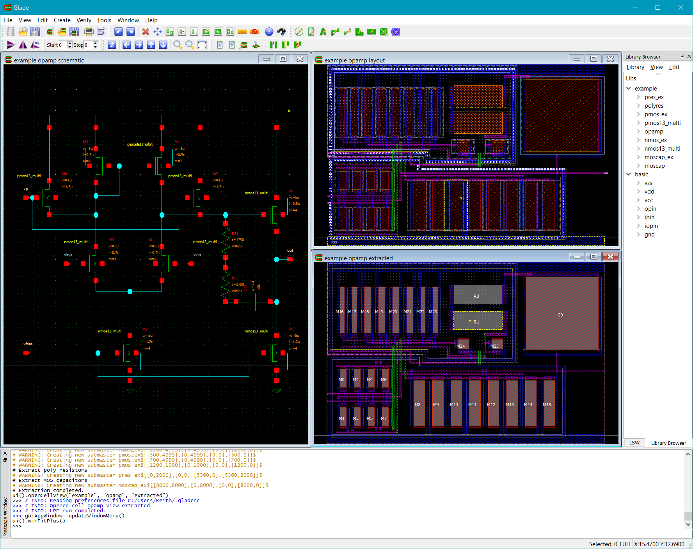
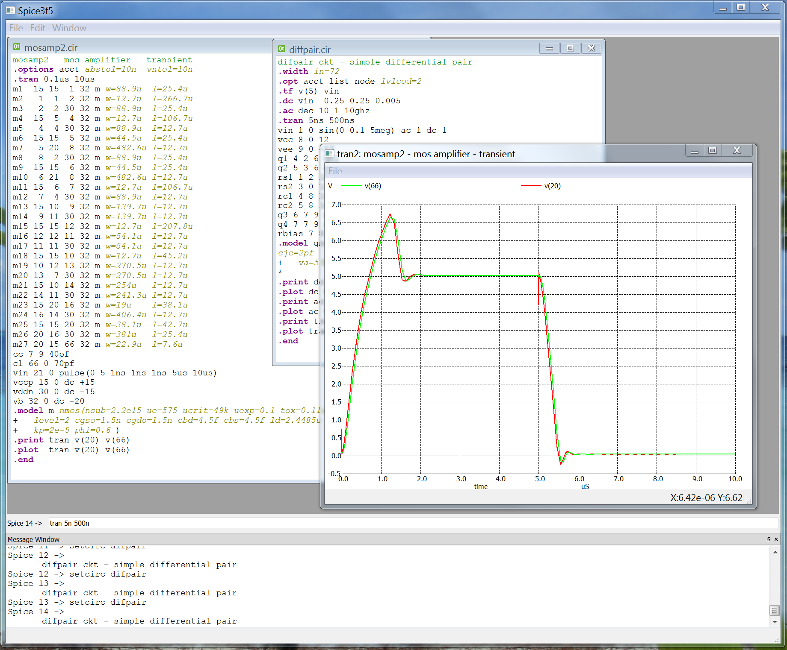

Peardrop Design Systems
Glade (Gds, Lef And Def Editor), is a IC layout and schematic editor capable of reading and writing common EDA formats. With built in DRC, extraction and LVS you can generate and verify schematics and layout in a single customisable tool. Glade can load and display large design databases with its fast, lightweight object-oriented database. Released now for over 10 years, Glade was the first free layout editor available for Windows. Glade uses the Qt cross-platform GUI toolkit for a modern GUI and OpenGL for hardware accelerated graphics when available to give superior display speeds, but also supports software rendering for older hardware. Glade is extendable using Python scripting, allowing access to the database and gui via SWIG wrapping of C++ functions.
News: The Mac OSX port of Glade now uses single threaded OpenGL, as Apple have quietly dropped support for multithreaded OpenGL as of Catalina. Shame on you, Apple! Other platforms are unaffected.
Glade is currently built and available for Windows, Linux and Mac OS X using the Qt gui toolkit. So it will run on your laptop or office servers.
Download the Mac OS X 64 bit build (tested on OS X 10.15 aka Catalina) version 4.7.37
Download the Windows 32 bit build (tested on Windows 10) version 4.7.37
Download the Windows 64 bit build (tested on Windows 10) version 4.7.37
Download the Linux 64 bit build for RHEL6 (tested on CentOs 6.8) version 4.7.37
Download the Linux 64 bit build for RHEL7 (tested on CentOS 7) version 4.7.37
Download the Linux 64 bit build for Ubuntu (tested on Ubuntu 16.04) version 4.7.37
Download the Linux 64 bit build for Ubuntu (tested on Ubuntu 18.04) version 4.7.37
Download the Linux 64 bit build for OpenSuse (tested on OpenSuse 15.1) version 4.7.37
Here is a list of the latest changes.
The Glade User Forum can be found here.
Here is a basic user guide.
Glade is featured in a poster presented at ISCAS 2017.
The academic mixed signal physical design kit using Glade and SpiceOpus is available here.
A Glade design kit for the NCSU 15nm example finfet process is available here.
|  |  |
A compatible build (27/02/2020) of the Spice3 simulator with a Qt gui is also available:
Download the Mac OS X 64 bit build (tested on OS X 10.15 aka Catalina) version 0.7
Download the Windows 32 bit build (tested on Windows 10) version 0.7
Download the Windows 64 bit build (tested on Windows 10) version 0.7
Download the Linux 64 bit build for RHEL7 (tested on CentOS 7) version 0.7
Download the Linux 64 bit build for Ubuntu (tested on Ubuntu 16.04) version 0.7
Download the Linux 64 bit build for Ubuntu (tested on Ubuntu 18.04) version 0.7
Download the Linux 64 bit build for OpenSuse (tested on OpenSuse 15.1) version 0.7
Copyright © Peardrop Design Systems 2020.